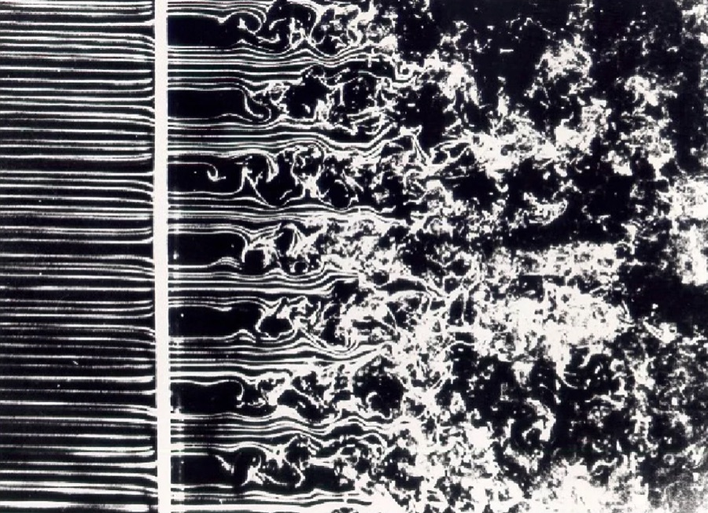
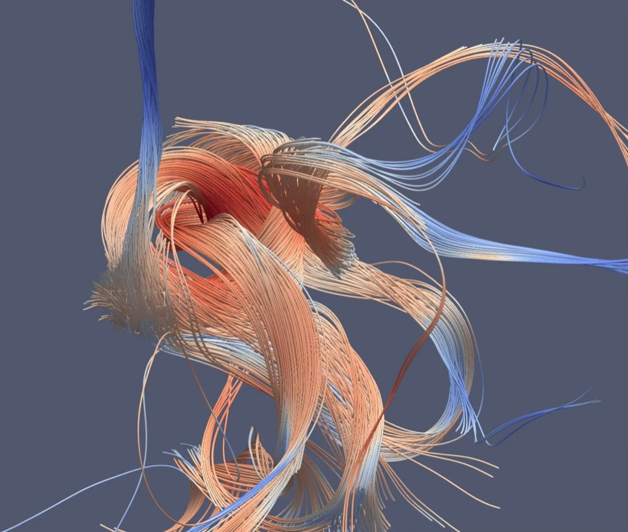
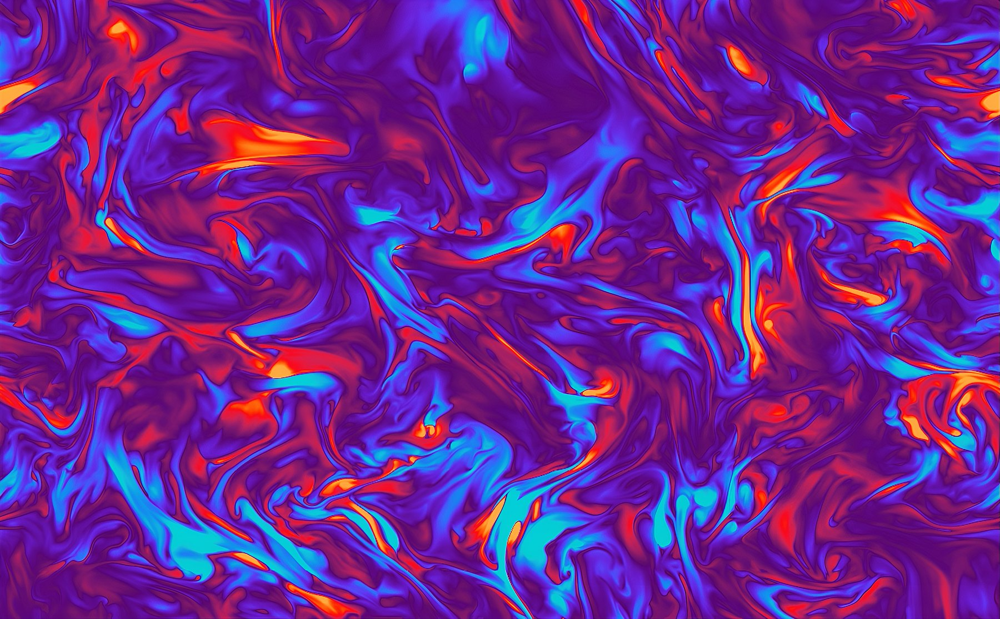

Decaying turbulence in magnetised plasmas
Imagine stirring up a fluid with very low viscosity and then allowing the turbulent motions to decay away. How would the energy of the flow depend on time? The answer is that energy decays at the “turnover” (roughly, rotation) rate of the largest eddies. As the flow becomes increasingly weak, that rate is constrained by dynamical invariants related to the random momentum carried by large patches of fluid. This enables the energy to be calculated as a function of time.
What about magnetic fields in a plasma? In this case, magnetic structures relax towards local quasi-equilibrium states with random, non-zero magnetic helicity—a measure of the twist and linkage of magnetic field lines. Even when the total magnetic helicity vanishes, large regions contain random excesses of positive or negative helicity, and a statistical measure of these fluctuations remains approximately conserved as the field relaxes. In cases where the energy of the magnetic field dominates over that of plasma flows, magnetic reconnection—the breaking and rejoining of field lines that lets neighbouring structures merge—controls the decay timescale, while helicity conservation constrains how field strength and structure size evolve together (Phys. Rev. X, 2021).


These ideas explain several puzzling features of relaxing chaotic magnetic fields, chief among them their tendency to transfer energy to larger scales, even when their total helicity vanishes. They also have consequences for cosmology: they imply that magnetic fields generated at the electroweak phase transition, a fraction of a nanosecond after the Big Bang, could survive to the present with strengths several orders of magnitude greater than earlier estimates, consistent with magnetic-field constraints inferred from gamma-ray observations of blazars (Nature Commun., 2023).
